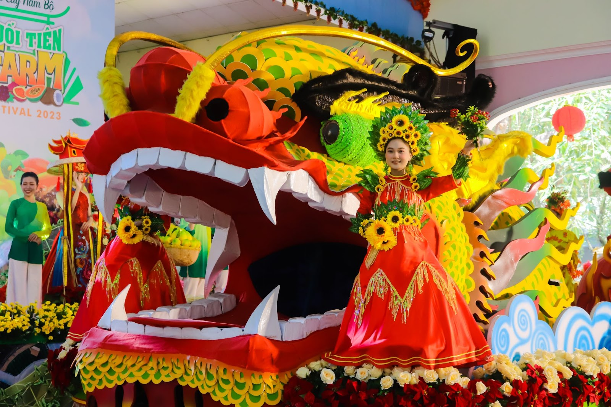

Lễ hội là bức tranh tươi rói của miệt vườn Nam Bộ, nơi nông sản không chỉ để bán mà còn để kể chuyện về mùa vụ, đất đai, sự cần cù và niềm vui hào sảng của người miền Tây.
Lễ hội Trái cây Phụng Hiệp hấp dẫn bởi vẻ tươi mới rất tự nhiên. Những loại trái cây quen thuộc của miền Tây khi bước vào không gian lễ hội lại trở nên rực rỡ, sinh động và mang nhiều câu chuyện hơn về vùng đất đã nuôi dưỡng chúng.
Điều thú vị là lễ hội không chỉ thiên về vui chơi mà còn làm nổi bật bản sắc nông nghiệp của đồng bằng. Đây là dịp để du khách thấy rõ cách sản vật địa phương gắn với khí hậu, phù sa, mùa vụ và đời sống người dân.

Mỗi quầy trái cây đều mang màu sắc và cá tính riêng của vùng đất miệt vườn.
Mọi thứ từ hương thơm đến sắc màu đều cho thấy sức sống của mùa vụ miền Tây.
Đây là kiểu lễ hội dễ khiến người ta thấy nhẹ nhàng và đầy năng lượng tích cực.
Điểm đẹp nhất của lễ hội nằm ở việc sản vật nông nghiệp được nâng thành trải nghiệm văn hóa. Bạn sẽ thấy miệt vườn không chỉ là nơi trồng trái cây, mà còn là nơi nuôi dưỡng cách sống hào sảng và yêu thiên nhiên của người miền Tây.
Những cụm trái cây chín tạo nên khung cảnh vừa dân dã vừa rực rỡ hiếm có.
Mỗi loại trái cây là một phần của nhịp thời gian nông nghiệp miền Tây.
Lễ hội làm người xem nhớ rằng vẻ đẹp văn hóa đôi khi đến từ những điều bình dị nhất.
Để chuyến đi không bị lướt qua quá nhanh, bạn nên kết hợp ngắm, thử và trò chuyện với người bán hoặc người trồng.
Hãy để mắt quen với bảng màu rực rỡ trước khi chọn điểm ghé sâu hơn.
Những nơi này thường cũng là nơi kể nhiều câu chuyện thú vị về giống trái cây.
Ăn đúng mùa luôn cho cảm giác ngon hơn và cũng đúng tinh thần lễ hội nhất.
Một phần quà nhỏ cũng đủ kéo dài dư vị vui tươi của chuyến đi.
Nếu bạn thấy website hữu ích, hãy ủng hộ một ly cà phê để nhóm có thêm động lực phát triển.
 Quét mã QR hoặc nhấn vào ảnh để ủng hộ.
Quét mã QR hoặc nhấn vào ảnh để ủng hộ.
Đánh giá từ du khách
Hãy chia sẻ cảm nhận của bạn về sắc màu và không khí miệt vườn tại lễ hội nhé.